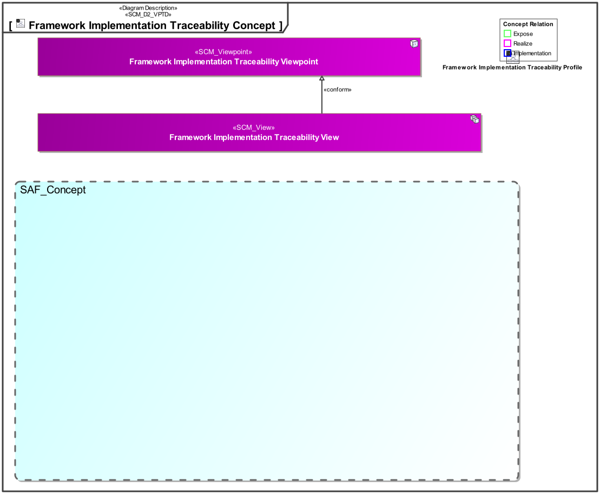
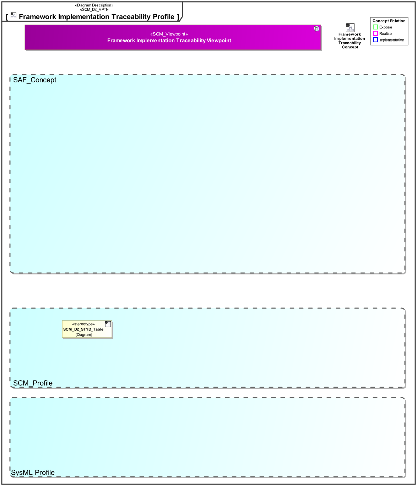

D8_STYD Framework Implementation Traceability Viewpoint
| Domain | Aspect | Maturity |
|---|---|---|
| SAF Development | Traceability & Mapping |
The Framework Implementation Traceability Viewpoint provides an overview about concepts and viewpoints are implemented using stereotypes or other model elements.
The viewpoint is intended to be used for development or extension of the SAF.
The Viewpoint supports the “Specification of an architecture description framework” as defined in ISO42010:2022
A Matrix featuring the Concepts, Viewpoints and Stereotypes of the SAF profile.
The following Stereotypes / Model Elements are used in the Viewpoint:
The Diagram shows the concepts exposed by the viewpoint, and related concepts if necessary.

| Concept | Documentation |
|---|
The Diagram shows the implementation of exposed concepts.

| Concept | Realization |
|---|